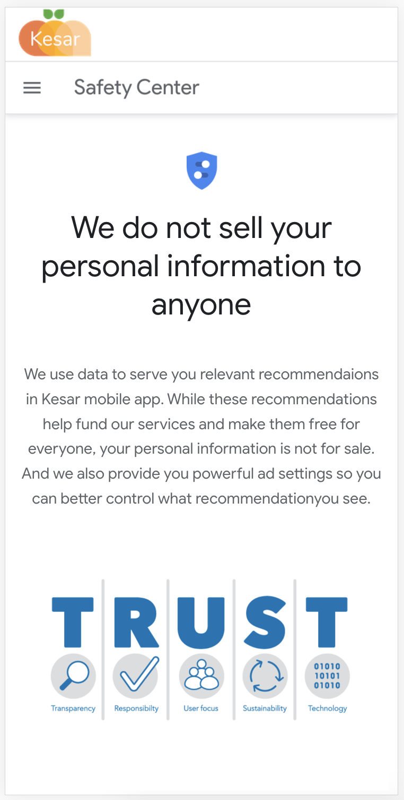
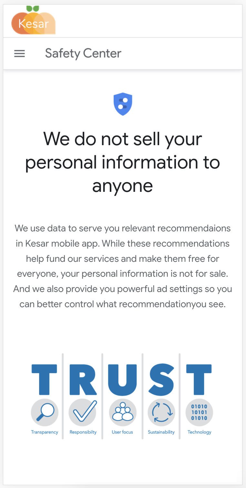

கேசர்சாஃப்ட் ("எங்களுக்கு", "நாங்கள்" அல்லது "எங்கள்") https://kesarsoft.com/ வலைத்தளம், கேசர் கண்காணிப்பு மென்பொருள், கேசர் கிளையண்ட் மொபைல் பயன்பாடு மற்றும்கேசர் மேலாளர் மொபைல் பயன்பாடு ("சேவை").
எங்கள் சேவையைப் பயன்படுத்தும்போது தனிப்பட்ட தரவைச் சேகரித்தல், பயன்படுத்துதல் மற்றும் வெளிப்படுத்துவது தொடர்பான எங்கள் கொள்கைகளையும், அந்தத் தரவோடு நீங்கள் தொடர்புபடுத்திய தேர்வுகளையும் இந்தப் பக்கம் உங்களுக்குத் தெரிவிக்கிறது.
சேவையை வழங்கவும் மேம்படுத்தவும் உங்கள் தரவைப் பயன்படுத்துகிறோம். சேவையைப் பயன்படுத்துவதன் மூலம், இந்தக் கொள்கைக்கு ஏற்ப தகவல்களைச் சேகரிப்பதற்கும் பயன்படுத்துவதற்கும் ஒப்புக்கொள்கிறீர்கள். இந்த தனியுரிமைக் கொள்கையில் வேறுவிதமாக வரையறுக்கப்படாவிட்டால், இந்த தனியுரிமைக் கொள்கையில் பயன்படுத்தப்படும் சொற்கள் எங்கள் விதிமுறைகள் மற்றும் நிபந்தனைகளில் உள்ள அதே அர்த்தங்களைக் கொண்டுள்ளன.
எங்கள் சேவையை உங்களுக்கு வழங்கவும் மேம்படுத்தவும் பல்வேறு நோக்கங்களுக்காக பல்வேறு வகையான தகவல்களை நாங்கள் சேகரிக்கிறோம்.
எங்கள் சேவையைப் பயன்படுத்தும் போது, உங்களைத் தொடர்புகொள்வதற்கோ அல்லது அடையாளம் காண்பதற்கோ ("தனிப்பட்ட தரவு") பயன்படுத்தக்கூடிய தனிப்பட்ட முறையில் அடையாளம் காணக்கூடிய சில தகவல்களை எங்களுக்கு வழங்குமாறு நாங்கள் உங்களிடம் கேட்கலாம். தனிப்பட்ட முறையில் அடையாளம் காணக்கூடிய தகவல்கள் இதில் அடங்கும், ஆனால் இவை மட்டும் அல்ல:
நீங்கள் எங்கள் சேவையைப் பார்வையிடும்போதோ அல்லது மொபைல் சாதனத்தின் மூலமாகவோ ("பயன்பாட்டுத் தரவு") சேவையை அணுகும்போதோ உங்கள் உலாவி அனுப்பும் தகவல்களையும் நாங்கள் சேகரிக்கலாம்.
இந்த பயன்பாட்டுத் தரவில் உங்கள் கணினியின் இணைய நெறிமுறை முகவரி (எ.கா. ஐபி முகவரி), உலாவி வகை, உலாவி பதிப்பு, நீங்கள் பார்வையிடும் எங்கள் சேவையின் பக்கங்கள், உங்கள் வருகையின் நேரம் மற்றும் தேதி, அந்த பக்கங்களில் செலவழித்த நேரம், தனித்துவமானது போன்ற தகவல்கள் இருக்கலாம். சாதன அடையாளங்காட்டிகள் மற்றும் பிற கண்டறியும் தரவு.
மொபைல் சாதனத்தின் மூலமாகவோ அல்லது சேவையிலோ நீங்கள் சேவையை அணுகும்போது, இந்த பயன்பாட்டுத் தரவில் நீங்கள் பயன்படுத்தும் மொபைல் சாதனத்தின் வகை, உங்கள் மொபைல் சாதனத்தின் தனிப்பட்ட ஐடி, உங்கள் மொபைல் சாதனத்தின் ஐபி முகவரி, உங்கள் மொபைல் இயக்க முறைமை, வகை போன்ற தகவல்கள் இருக்கலாம். நீங்கள் பயன்படுத்தும் மொபைல் இணைய உலாவி, தனிப்பட்ட சாதன அடையாளங்காட்டிகள் மற்றும் பிற கண்டறியும் தரவு.
எங்கள் சேவையின் செயல்பாட்டைக் கண்காணிக்கவும் சில தகவல்களை வைத்திருக்கவும் குக்கீகள் மற்றும் ஒத்த கண்காணிப்பு தொழில்நுட்பங்களைப் பயன்படுத்துகிறோம்.
குக்கீகள் என்பது சிறிய அளவிலான தரவைக் கொண்ட கோப்புகள், அதில் அநாமதேய தனிப்பட்ட அடையாளங்காட்டி இருக்கலாம். குக்கீகள் ஒரு வலைத்தளத்திலிருந்து உங்கள் உலாவிக்கு அனுப்பப்பட்டு உங்கள் சாதனத்தில் சேமிக்கப்படும். தகவல்களை சேகரிப்பதற்கும் கண்காணிப்பதற்கும் மற்றும் எங்கள் சேவையை மேம்படுத்துவதற்கும் பகுப்பாய்வு செய்வதற்கும் பீக்கான்கள், குறிச்சொற்கள் மற்றும் ஸ்கிரிப்ட்கள் ஆகியவை கண்காணிப்பு தொழில்நுட்பங்கள்.
எல்லா குக்கீகளையும் மறுக்க அல்லது உங்கள் குக்கீ அனுப்பப்படும் போது குறிக்க உங்கள் உலாவிக்கு அறிவுறுத்தலாம். இருப்பினும், நீங்கள் குக்கீகளை ஏற்கவில்லை என்றால், எங்கள் சேவையின் சில பகுதிகளை நீங்கள் பயன்படுத்த முடியாது.
நாங்கள் பயன்படுத்தும் குக்கீகளின் எடுத்துக்காட்டுகள்:
கேசர் சேகரிக்கப்பட்ட தரவை பல்வேறு நோக்கங்களுக்காகப் பயன்படுத்துகிறது:
தனிப்பட்ட தரவு உட்பட உங்கள் தகவல்கள், உங்கள் மாநிலம், மாகாணம், நாடு அல்லது பிற அரசாங்க அதிகார எல்லைக்கு வெளியே அமைந்துள்ள கணினிகளுக்கு மாற்றப்பட்டு பராமரிக்கப்படலாம் - அங்கு தரவு பாதுகாப்பு சட்டங்கள் உங்கள் அதிகார வரம்பை விட வேறுபடலாம்.
இந்த தனியுரிமைக் கொள்கைக்கான உங்கள் ஒப்புதல் மற்றும் நீங்கள் அத்தகைய தகவல்களைச் சமர்ப்பித்ததைத் தொடர்ந்து அந்த பரிமாற்றத்திற்கான உங்கள் உடன்பாட்டைக் குறிக்கிறது.
கேசர்.உங்கள் தரவு பாதுகாப்பாகவும் இந்த தனியுரிமைக் கொள்கையின்படி நடத்தப்படுவதையும் உறுதிப்படுத்த தேவையான அனைத்து நடவடிக்கைகளையும் எடுக்கும் மற்றும் உங்கள் தரவின் பாதுகாப்பு உட்பட போதுமான கட்டுப்பாடுகள் இல்லாவிட்டால் உங்கள் தனிப்பட்ட தரவின் பரிமாற்றம் ஒரு அமைப்பு அல்லது நாட்டிற்கு நடைபெறாது. மற்றும் பிற தனிப்பட்ட தகவல்கள்.
கேசர்.இதுபோன்ற நடவடிக்கை அவசியம் என்ற நல்ல நம்பிக்கையில் உங்கள் தனிப்பட்ட தரவை வெளியிடலாம்:
உங்கள் தரவின் பாதுகாப்பு எங்களுக்கு முக்கியமானது, ஆனால் இணையத்தில் பரிமாற்றம் செய்யும் எந்த முறையும் அல்லது மின்னணு சேமிப்பக முறையும் 100% பாதுகாப்பானது என்பதை நினைவில் கொள்ளுங்கள். உங்கள் தனிப்பட்ட தரவைப் பாதுகாக்க வணிக ரீதியாக ஏற்றுக்கொள்ளக்கூடிய வழிகளைப் பயன்படுத்த நாங்கள் முயற்சிக்கும்போது, அதன் முழுமையான பாதுகாப்பை எங்களால் உத்தரவாதம் அளிக்க முடியாது.
எங்கள் சேவையை ("சேவை வழங்குநர்கள்") எளிதாக்குவதற்கும், எங்கள் சார்பாக சேவையை வழங்குவதற்கும், சேவை தொடர்பான சேவைகளைச் செய்வதற்கும் அல்லது எங்கள் சேவை எவ்வாறு பயன்படுத்தப்படுகிறது என்பதை பகுப்பாய்வு செய்வதில் எங்களுக்கு உதவுவதற்கும் மூன்றாம் தரப்பு நிறுவனங்கள் மற்றும் தனிநபர்களை நாங்கள் நியமிக்கலாம்.
எங்கள் சார்பாக இந்த பணிகளைச் செய்ய மட்டுமே இந்த மூன்றாம் தரப்பினருக்கு உங்கள் தனிப்பட்ட தரவை அணுக முடியும், மேலும் அதை வேறு எந்த நோக்கத்திற்காகவும் வெளியிடவோ பயன்படுத்தவோ கூடாது.
எங்கள் சேவையின் பயன்பாட்டைக் கண்காணிக்கவும் பகுப்பாய்வு செய்யவும் மூன்றாம் தரப்பு சேவை வழங்குநர்களைப் பயன்படுத்தலாம்.
எங்களால் இயக்கப்படாத பிற தளங்களுக்கான இணைப்புகளை எங்கள் சேவையில் கொண்டிருக்கலாம். நீங்கள் ஒரு மூன்றாம் தரப்பு இணைப்பைக் கிளிக் செய்தால், நீங்கள் அந்த மூன்றாம் தரப்பினரின் தளத்திற்கு அனுப்பப்படுவீர்கள். நீங்கள் பார்வையிடும் ஒவ்வொரு தளத்தின் தனியுரிமைக் கொள்கையையும் மதிப்பாய்வு செய்ய நாங்கள் கடுமையாக அறிவுறுத்துகிறோம்.
எந்தவொரு மூன்றாம் தரப்பு தளங்கள் அல்லது சேவைகளின் உள்ளடக்கம், தனியுரிமைக் கொள்கைகள் அல்லது நடைமுறைகளுக்கு எங்களுக்கு எந்த கட்டுப்பாடும் இல்லை.
எங்கள் சேவை 18 வயதிற்குட்பட்ட எவரையும் ("குழந்தைகள்") உரையாற்றவில்லை.
18 வயதிற்கு உட்பட்டவர்களிடமிருந்து தனிப்பட்ட முறையில் அடையாளம் காணக்கூடிய தகவல்களை நாங்கள் தெரிந்தே சேகரிக்கவில்லை. நீங்கள் ஒரு பெற்றோர் அல்லது பாதுகாவலராக இருந்தால், உங்கள் குழந்தைகள் எங்களுக்கு தனிப்பட்ட தரவை வழங்கியிருப்பதை நீங்கள் அறிந்திருந்தால், தயவுசெய்து எங்களை தொடர்பு கொள்ளவும். பெற்றோரின் அனுமதியை சரிபார்க்காமல் குழந்தைகளிடமிருந்து தனிப்பட்ட தரவை நாங்கள் சேகரித்தோம் என்பது எங்களுக்குத் தெரிந்தால், அந்த தகவலை எங்கள் சேவையகங்களிலிருந்து அகற்ற நடவடிக்கை எடுப்போம்.
நாங்கள் எங்கள் தனியுரிமைக் கொள்கையை அவ்வப்போது புதுப்பிக்கலாம். இந்த பக்கத்தில் புதிய தனியுரிமைக் கொள்கையை இடுகையிடுவதன் மூலம் எந்த மாற்றங்களையும் நாங்கள் உங்களுக்கு அறிவிப்போம்.
மாற்றம் பயனுள்ளதாக மாறுவதற்கு முன்பு மின்னஞ்சல் மற்றும் / அல்லது எங்கள் சேவையில் ஒரு முக்கிய அறிவிப்பு மூலம் உங்களுக்குத் தெரியப்படுத்துவோம், மேலும் இந்த தனியுரிமைக் கொள்கையின் மேலே உள்ள "பயனுள்ள தேதியை" புதுப்பிக்கவும்.
மாற்றம் பயனுள்ளதாக மாறுவதற்கு முன்பு மின்னஞ்சல் மற்றும் / அல்லது எங்கள் சேவையில் ஒரு முக்கிய அறிவிப்பு மூலம் எந்தவொரு மாற்றங்களுக்கும் இந்த தனியுரிமைக் கொள்கையை அவ்வப்போது மதிப்பாய்வு செய்ய அறிவுறுத்தப்படுகிறீர்கள். இந்த தனியுரிமைக் கொள்கையில் மாற்றங்கள் இந்தப் பக்கத்தில் வெளியிடப்படும் போது அவை பயனுள்ளதாக இருக்கும்.
இந்த தனியுரிமைக் கொள்கையைப் பற்றி ஏதேனும் கேள்விகள் இருந்தால், தயவுசெய்து எங்களை மின்னஞ்சல் மூலம் தொடர்பு கொள்ளவும்: